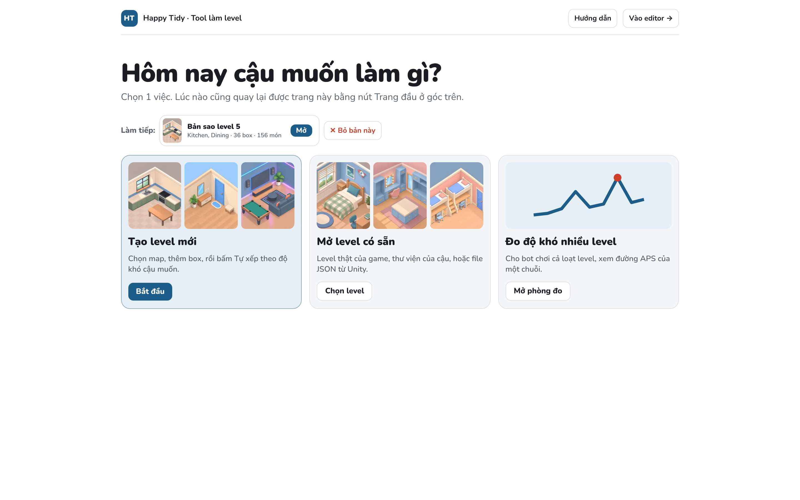
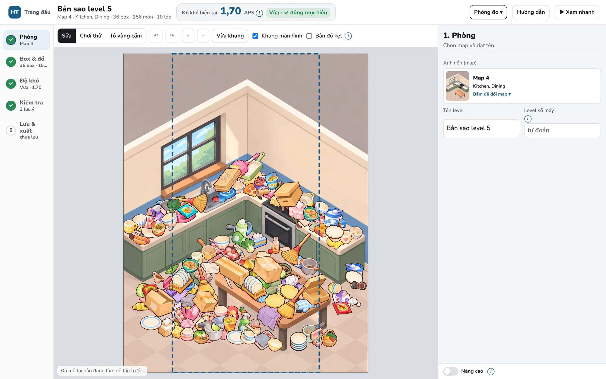
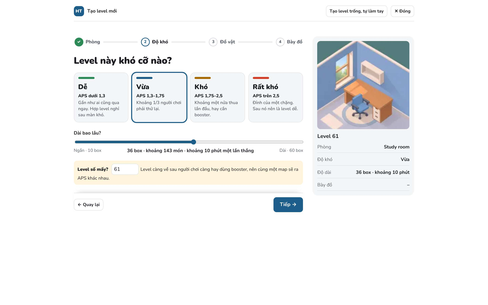
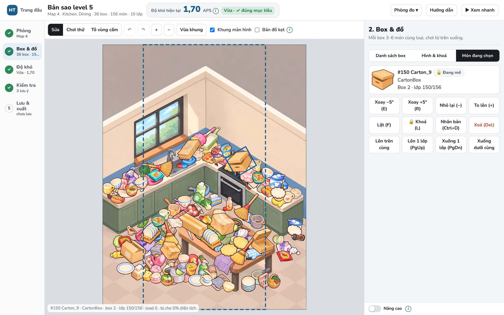
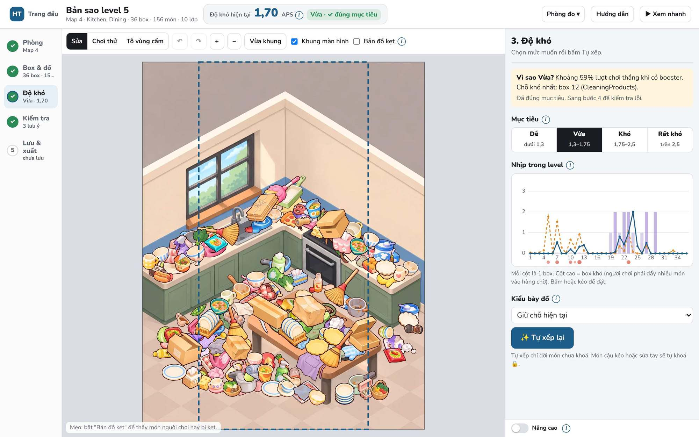
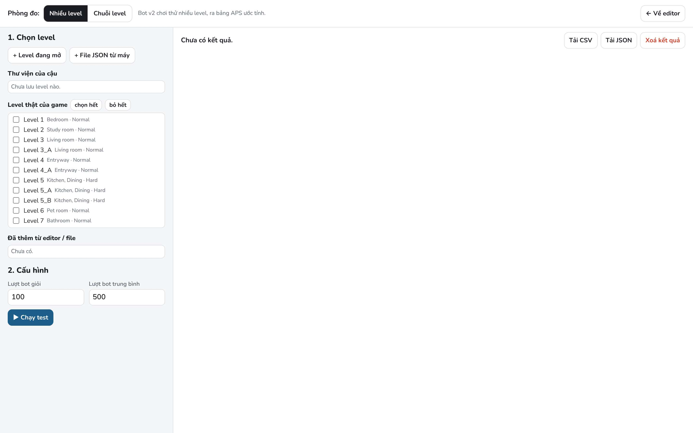

Hướng dẫn sử dụng
Tạo level, chỉnh tay, đo độ khó, cho người chơi thử. Cậu chỉ cần đọc phần mình đang cần.
1. Mở tool
Bấm Mở tool tạo level ở trang chủ. Dùng Chrome hoặc Edge.

- Tạo level mới: tool hỏi vài câu rồi tự gen level.
- Mở level có sẵn: level thật của game (có ảnh map và APS thật), thư viện của cậu, hoặc file JSON.
- Đo độ khó nhiều level: mở thẳng Phòng đo.
Đang làm dở thì thấy chip Làm tiếp. Không cần bản đó nữa thì bấm ✕ Bỏ bản này.
Muốn về đây lúc nào cũng được: bấm Trang đầu góc trên trái.
2. Màn hình editor

- Phòng: map, tên, số level.
- Box & đồ: danh sách box, hình, khoá.
- Độ khó: mục tiêu và Tự xếp.
- Kiểm tra: lỗi và cảnh báo.
- Lưu & xuất: thư viện, tải file.
Bước nào xong sẽ có dấu ✓.
Thanh độ khó ở trên luôn cho cậu thấy APS, mức, và có đúng mục tiêu không. Bấm vào đó để sang bước 3.
Nút ⓘ giải thích từng từ khó. ▶ Xem nhanh chiếu lại tour 1 phút.
3. Tạo level mới
Ở màn hình đầu bấm Tạo level mới. Có 4 câu hỏi.

- Phòng: chọn map.
- Độ khó: chọn mức, kéo thanh độ dài (10–60 box, tool báo số phút ước tính), nhập số level.
- Đồ vật: tool đã chọn sẵn nhóm hợp phòng. Dễ thì ưu tiên món dễ thấy, Khó trở lên thì ưu tiên món khó thấy.
- Bày đồ: rải đều, gom cụm, chồng cao hoặc dồn giữa. Tool đánh dấu 1 kiểu Gợi ý.
Cuối cùng bấm ✨ Gen level. Tool xếp đồ và chạy Tự xếp tới khi APS vào khoảng. Mất 10–80 giây. Xong sẽ mở editor ở bước 3.
Muốn tự làm từ đầu: bấm Tạo level trống, tự làm tay.
APS là số lần chơi trung bình để thắng 1 lần. APS 1,0 nghĩa là ai cũng thắng ngay lần đầu.
4. Sửa tay
Không ưng chỗ nào thì cậu sửa thẳng trên map. Chọn chế độ Sửa.

- Kéo món trên map để dời chỗ.
- Bấm 1 món để xoay, đổi cỡ, lật, đổi lớp.
- Cần thì bấm Tô vùng cấm để vẽ chỗ không được đặt đồ.
- Chơi thử để tự chơi. Bản đồ kẹt cho thấy chỗ người chơi hay bị kẹt.
L để khoá hoặc mở.| Phím | Làm gì |
|---|---|
E / R | Xoay trái / phải |
− / + | Nhỏ / to |
F | Lật |
PgUp / PgDn | Lên / xuống 1 lớp |
Del · Ctrl+D | Xoá · nhân bản |
Ctrl+Z hoặc ↶ | Hoàn tác |
Sửa box: ở bước 2 → Danh sách box. Thêm, xoá, kéo số thứ tự để đổi chỗ, đổi loại đồ và số món.
5. Độ khó và Tự xếp

- Đọc ô Vì sao ở trên cùng: nó nói vì sao level đang ở mức này và box nào khó nhất.
- Chọn Mục tiêu: Dễ, Vừa, Khó hoặc Rất khó.
- Xem Nhịp trong level. Mỗi cột là 1 box, cột càng cao càng khó. Bấm hoặc kéo để chỉnh.
- Chọn Kiểu bày đồ.
- Bấm ✨ Tự xếp lại. Tool chỉ dời món chưa khoá.
Không ưng thì bấm Hoàn tác (Ctrl+Z) rồi thử lại.
6. Phòng đo
Bấm Phòng đo ở góc trên bên phải. Có 2 tab.

Nhiều level
- Chọn level: đang mở, thư viện, level thật của game, hoặc file JSON.
- Bấm Chạy test.
- Đọc bảng APS ước tính. Tải CSV hoặc JSON nếu cần.
Chuỗi level
- Thêm level vào chuỗi, sắp thứ tự bằng ↑ ↓.
- Bấm Đo cả chuỗi.
- Xem nhịp khó dễ. Tool cảnh báo khi có level khó đứng liền nhau.

Bot v2 có 6 nhóm người chơi (giỏi, trung bình, yếu; hay hoặc ít dùng booster), học từ dữ liệu thật L6–20. Sai số APS khoảng 0,1–0,2 ở L21–60.
7. Lưu và gửi dev
Vào bước 5, Lưu & xuất.
- Bấm lưu vào thư viện. Cùng tên thì ghi đè.
- Bấm tải file JSON để gửi dev.
Còn lỗi đỏ ở bước 4 thì lúc tải tool sẽ cảnh báo. Nên sửa trước.
8. Cho người chơi thử
Người test
- Mở link
playtest.html, nhập tên (chỉ 1 lần). - Bấm thẻ level (có ảnh map và chấm tiến độ), rồi chơi.
- Chơi xong bấm Gửi kết quả cho designer. Bản web sẽ tải về 1 file, gửi file đó qua Slack hoặc email.
Designer
- Mở
playtest.html?admin=1để quản lý level và nhập file kết quả. - Xem từng level: người chơi cảm thấy khó cỡ nào so với mục tiêu.
9. Lỗi thường gặp
Level mãi không vào mục tiêu?
Thử kiểu bày nhẹ hơn (rải đều) hoặc bớt box, rồi Tự xếp lại.
Tự xếp dời mất món của tôi?
Bấm món đó, bấm L để khoá 🔒. Món cậu tự kéo hay sửa thì đã tự khoá rồi.
Không thấy cài đặt cần tìm?
Bật Nâng cao ở cuối bảng bên phải.
Mất bản đang làm?
Về Trang đầu, tìm chip Làm tiếp. Bản nháp và thư viện chỉ ở trong trình duyệt này, nên hãy tải JSON để giữ.